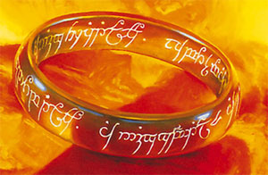
Gli
anelli magici sono oggetti magici abbastanza diffusi ed in grado di possedere un
rilevante potere magico. Per essere utilizzato l'anello magico deve essere
infilato obbligatoriamente
al dito di una mano. Ogni
creatura può indossare al massimo due anelli magici (indossandoli anche sulla
medesima mano). Qualora una creatura indossi più di due anelli magici il
potenziale magico degli anelli andrà in conflitto neutralizzandosi fino a che
tale situazione permarrà (gli anelli continueranno a risultare incantati ma non
potranno attivare i loro poteri). Il potere magico degli anelli riprenderà vigore non
appena saranno rimossi gli anelli superiori al numero di due.
Di regola il potenziale di magia proprio di un anello magico equivale a quello
di un incantesimo lanciato al 12° livello di lancio (se, però, per utilizzare il
potere magico è necessario un livello superiore il potenziale di magia sarà pari
al livello minimo al quale tale potere può essere utilizzato). Esistono
eccezioni a tale regola che sono riportate nella descrizione dell'anello magico.
Qualora non sia espressamente previsto diversamente, gli anelli magici possono essere utilizzati da creature appartenenti a tutte le classi di personaggio.
Qualora non sia diversamente previsto, utilizzare il potere di un anello magico non richiede il mantenimento della concentrazione ma l'uso di componenti somatici e verbali (quest'ultimi rappresentati dalla parola magica di attivazione). Come per il lancio delle magie, inoltre, l'attivazione del potere magico dell'anello è considerata un'azione complessa che deve avvenire all'inizio del round. Di regola, infine, attivare il potere magico di un anello ha un fattore di iniziativa pari a +3.
Ogni volta che chi indossa un anello subisce un critico alla relativa mano (non quindi un critico al braccio) vi è il 15% di possibilità che l'anello sia stato colpito dovendo superare un tiro salvezza contro rottura pari ad 7. Questo tiro va ripetuto per ogni anello indossato sulla mano che ha subito il critico.
ANELLI MAGICI A CARICHE
Gli anelli a cariche possiedono un ammontare massimo di cariche pari a 20. A meno che non sia diversamente specificato, gli anelli magici a cariche possono essere ricaricati come ogni altro oggetto magico, ma a differenza degli altri oggetti magici, tutte le cariche magiche di un anello possono essere utilizzate senza che il potere magico dell'anello si disperda. In questo ultimo caso, però, la possibilità di rottura dell'anello durante la fase di ricarica sarà incrementata del +5%.
Quando un anello magico viene ritrovato possiede 1d20 cariche residue (se viene tirato un risultato pari ad 1, tirare 1d6 con un risultato da 1 a 3 l'anello non avrà alcuna carica residua, con un risultato da 4 a 6 l'anello avrà un'unica carica). Inoltre, si tiri un dado da 12 per verificare se e quante volte l'anello è stata ricaricato: con un risultato da 1 a 5 l'anello non è mai stato ricaricato; per ogni risultato superiore al 5 l'anello è già stato ricaricato una volta; se si tira un risultato di 12, si tiri un ulteriore dado 6; con un risultato da 1 a 3 l'anello sarà stato ricaricato 7 volte, con un risultato da 4 a 6 l'anello non può essere più ricaricato.
Esclusivamente il valore in monete d'oro (inteso come valore medio di mercato) di un anello magico dipenderà anche dalla situazione relative alle sue cariche. Per ogni carica utilizzata dell'anello occorre ridurre il suo valore dell'anello del 2% (se, però, l'anello non possiede alcuna carica ridurre il suo valore complessivamente del 50%).
Se l'anello è già stato ricaricato ridurre del 3% il suo valore finale per ogni ricarica effettuata fino ad un massimo di -30% qualora lo stesso sia stato ricaricato 10 o più volte.
Per calcolare il valore di mercato di un anello magico che non può essere più ricaricato ridurre del 50% il suo valore finale dividere il risultato per 20 e moltiplicarlo per il numero di cariche residue, aggiungere quindi 325 monete d'oro per il valore intrinseco dell'anello magico.


| OGGETTO | Ring of Contraspell |
| ORIGINE | MAGICA (20 CARICHE) |
| POTENZA | Lesser Enchantment (700 xp, 7.000 gp) |
| SCUOLA DI MAGIA | ABJURATION |
|
DESCRIZIONE
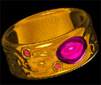 |
Questo anello magico a cariche si presenta forgiato in oro con incastonata una gemma trasparente, spesso del tipo ametista (per un valore minimo pari a 150 monete d'oro). Questo anello prova a difendere chi lo indossa da eventuali incantesimi che gli sono lanciati contro riflettendoli contro chi li ha lanciati. Possono essere riflessi incantesimi degli utenti di magia e dei sacerdoti dal 1° al 3° livello di potere che abbiano come loro bersaglio diretto colui che indossa l'anello, non si possono quindi riflettere incantesimi che abbiano un’area d’effetto spaziale anche qualora chi indossa l'anello si trovi all'interno dell'area d'effetto (non può, ad esempio, essere riflessa la magia burning hands, mentre può essere riflesso l'incantesimo magic missile). Qualora un incantesimo abbia come bersaglio anche altre creature oltre a colui che indossa l'anello, sarà riflessa sola la parte della magia diretta contro costui mentre la magia avrà regolare effetto per le restant parti (se per esempio un mago lanciasse due missili magici, dei quali solo uno indirizzato contro la creatura protetta, solo questo potrà essere riflesso mentre l’altro avrà i suoi normali effetti). Quindi, quando chi indossa questo anello risulta essere il bersaglio di un incantesimo che risponde ai suddetti requisiti, l'anello magico si attiverà automaticamente consumando un ammontare di cariche pari al livello di potere della magia. Qualora l'anello non dispone di cariche sufficienti lo stesso non si attiverà. Quando l'anello si attiva, la creatura che ha lanciato l'incantesimo contro chi indossa l'anello, sarà costretta a superare un tiro salvezza su magia. Se questo tiro salvezza ha successo il suo incantesimo sarà riuscito a superare la difesa dell'anello avendo il suo regolare effetto, altrimenti l’incantesimo sarà riflesso dall'anello e si rivolgerà contro colui che lo ha lanciato. Costui, dunque, dovrà eventualmente effettuare i tiri salvezza necessari per evitarlo o ridurne gli effetti. Si badi che l’incantesimo conserverà interamente la stessa efficacia originaria ed il suo raggio d'azione che in parte sarà stato utilizzato per raggiungere la creatura protetta dall'anello (per esempio, si ipotizzi una magia di magic missile avente un raggio di 24 metri, il missile una volta riflesso potrà riuscire a tornare indietro su colui che lo ha lanciato solo qualora questi si trovi, al momento del lancio, entro 12 metri dal bersaglio). Si noti, infine, che questo incantamento non trasferisce l'eventuale potere di controllare o beneficiare degli effetti della magia riflessa sulla creatura protetta, tale potere resterà proprio di chi ha lanciato la magia anche qualora costui risulti essere vittima del suo stesso incantesimo (si pensi ad una magia di charme). |
| OGGETTO | Ring of Energy Prism |
| ORIGINE | MAGICA (20 CARICHE) |
| POTENZA | Superior Enchantment (1250 xp, 12.500 gp) |
| SCUOLA DI MAGIA | ABJURATION |
|
DESCRIZIONE
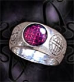 |
Questo anello magico a cariche si presenta solitamente forgiato in argento od oro bianco con incisi simboli geometrici e rune della scuola di Abjuration con incastonata una gemma trasparente, spesso del tipo ametista. L'anello possiede un incantamento della scuola Abjuration che permette di creare un prisma energetico difensivo che appare intorno a chi lo indossa. In particolare, chi indossa questo anello magico può attivarlo con una azione complessa avente fattore iniziativa pari a +3, che richiede componenti somatici e verbali (parola magica di attivazione) ma non il mantenimento della concentrazione. Orbene, una volta attivato un prisma multicolore appare attorno a chi indossa l'anello. Si tratta di una impenetrabile barriera di energia magica che non è possibile in nessun modo distruggere se non con un Dispel Magic lanciato con successo. La barriera proteggerà il mago per il resto del round in cui è stata lanciata e per l’intero round successivo per poi svanire in un arcobaleno di colori. Una volta lanciata la magia il prisma sarà (e con lui chi indossa l'anello) inamovibile e nessuna magia potrà entrare o uscire da questa barriera. Il mago potrà però lanciare magie su se stesso o compiere altre azioni all’interno della barriera (potrà anche teletrasportarsi in un altro luogo). Il prisma è immune ad ogni forma di danno fisico o magico. Se per qualsiasi motivo chi indossa l'anello magico lo rimuove, la barriera svanirà immediatamente. |
| OGGETTO | Ring of Glacial Defence |
| ORIGINE | MAGICA |
| POTENZA | Lesser Enchantment (500 xp, 5.000 gp) |
| SCUOLA DI MAGIA | ABJURATION |
|
DESCRIZIONE
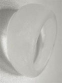 |
Questo anello magico è scolpito nel ghiaccio che poi è stato levigato ed incantato. L'anello magico of Glacial Defence può essere attivato per creare sul corpo della creatura che lo utilizza un gelido strato bluastro di polvere ghiacciata e nevischio. Questo strato ghiacciato contrasta eventuali danni da fuoco o calore ai quali la vittima è esposta riducendoli. Quando, infatti, l'anello è attivato con l'utilizzo della parola magica di attivazione la creatura che porta l'anello vedrà ridursi i danni da fuoco e calore (sia magici che normali) subiti del 50% per poi assorbire i primi due dei danni residui. Se per esempio chi indossa l'anello, dopo averlo attivato, avrebbe dovuto subire 10 danni da fuoco o calore (dopo le eventuali riduzioni per i tiri salvezza concessi) lo stesso subirà solo 3 danni (dimezzerà prima i danni a 5 per poi assorbirne 2). Ogni singolo attacco o danno da calore subito sarà, quindi, ridotto in questa misura. L'intenso freddo prodotto dall'anello sul corpo della creatura, però, provocherà alla stessa 1d2 danni da freddo (non magico) alla fine di ogni round di attivazione dell'anello. Una volta attivato l'anello produrrà il freddo ininterrottamente per 10 rounds o fino a che la creatura che lo indossa non lo sfili. A causa del freddo intenso, però, l'azione di sfilare l'anello (azione fisica complessa) può risultare estremamente complicata e per essere compiuta con successo richiede il superamento nello stesso round di una prova di forza e di una di destrezza. Questo anello non è a cariche ma può essere attivato una volta ogni 24 ore. Questo anello subisce una penalità di -2 a tutti i tiri salvezza contro fuoco o calore. |
| OGGETTO | Ring of Protection | ||||||||||||||||
| ORIGINE | MAGICA | ||||||||||||||||
| POTENZA | Variabile | ||||||||||||||||
| SCUOLA DI MAGIA | ABJURATION | ||||||||||||||||
|
DESCRIZIONE
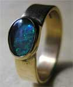 |
Gli anelli magici di
protezione creano attorno a chi li indossa un invisibile campo di forza
conferendo a chi lo indossa i seguenti benefici:
|
| OGGETTO | Ring of Protection from Evil |
| ORIGINE | MAGICA |
| POTENZA | Superior Enchantment (1000 xp, 10.000 gp) |
| SCUOLA DI MAGIA | ABJURATION |
|
DESCRIZIONE
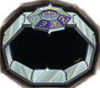 |
Questo anello magico è formato da una serie di placche di argento
purissimo e porta incastonata al suo centro una gemma con incise rune
della scuola di magia
Abjuration
(valore minimo pari a 500 monete d'oro). Chi indossa
quest'anello risulta essere costantemente protetto dal male ottenendo le
due seguenti forme di protezione: |

| OGGETTO | Ring of Safe Falling |
| ORIGINE | MAGICA |
| POTENZA | Superior Enchantment (750 xp, 7.500 gp) |
| SCUOLA DI MAGIA | ALTERATION |
|
DESCRIZIONE
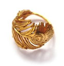 |
Questo anello magico a cariche si presenta
solitamente forgiato in oro ed avente la forma elaborata di una piuma
(valore minimo 150 g.p.). L'anello protegge costantemente chi lo indossa
dalle cadute in quanto il
suo incantamento si attiva immediatamente quando si verifica un
qualsiasi tipo di caduta libera nel vuoto. Quando questa circostanza si
verifica, la magia dell'anello rallenterà notevolmente la caduta di chi
lo indossa facendolo fluttuare verso il basso ad una velocità di 9 metri
al round, una velocità tale per cui quando la vittima toccherà il suolo
la stessa non subirà alcun danno da caduta (impatto). Si noti che il
peso e la massa della creatura resteranno invariate durante l'effetto di
questo incantamento. Una volta attivatasi l'effetto magico terminerà
solo quando la creatura toccherà il suolo od un'altra superficie solida
in grado di sorreggerla. Se, però, per qualsiasi motivo chi indossa
questo anello lo rimuove l'effetto magico terminerà immediatamente. Si
noti che forme di propulsione magica attive come ad esempio
l'incantesimo Fly
o Levitate
impediranno all'incantamento presente sull'anello di attivarsi. |
| OGGETTO | Ring of Range Extension |
| ORIGINE | MAGICA (20 CARICHE) |
| POTENZA | Superior Enchantment (1000 xp, 10.000 gp) |
| SCUOLA DI MAGIA | ALTERATION |
|
DESCRIZIONE
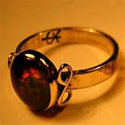 |
Questo anello magico a cariche si presenta solitamente forgiato in oro con rune della scuola di alterazione al suo interno ed una pietra preziosa di colore rosso. L'anello possiede un incantamento della scuola Alteration che permette di estendere il raggio delle magie lanciate da chi lo indossa (quest'anello può essere utilizzato sia dagli utenti di magia che dai sacerdoti). In particolare, chi indossa questo anello magico può utilizzarlo con una free action dichiarandolo nella fase delle intenzioni congiuntamente al lancio di un incantesimo. L'anello può essere utilizzato congiuntamente a qualsiasi incantesimo dal 1° al 5° livello di potere abbia raggio tocco e casting time non superiore ad 1 round. Orbene, la magia dell'anello estenderà il raggio d'azione dell'incantesimo portandolo a raggio d'azione 9 metri attraverso l'utilizzo di 1 carica magica oppure a raggio d'azione 15 metri attraverso l'utilizzo di 2 cariche magiche. Se l'anello viene utilizzato congiuntamente ad un incantesimo di 4° o 5° livello di potere dovrà essere utilizzata una carica supplementare. Si noti, inoltre, che qualora l'anello sia utilizzato per dirigere un incantesimo contro una creatura ostile o che non desidera riceverlo la vittima avrà diritto a superare un tiro salvezza su magia (senza alcun modificatore dipendente dalla magia utilizzata) per resistere all'incantamento dell'anello (parimenti costui potrà effettuare una prova di resistenza alla magia nei confronti del potere magico dell'anello). Se il tiro salvezza riesce si consideri come se la magia non sia mai arrivata sul bersaglio (come se il mago avesse sbagliato il tiro per colpire necessario a toccare la creatura). Se il tiro salvezza fallisce la vittima subirà gli effetti dell'incantesimo effettuando comunemente i previsti tiri salvezza (parimenti costui potrà effettuare una seconda prova di resistenza alla magia questa volta per evitare gli effetti dell'incantesimo). |
| OGGETTO | Ring of Warm Keeping |
| ORIGINE | MAGICA |
| POTENZA | Lesser Enchantment (500 xp, 5.000 gp) |
| SCUOLA DI MAGIA | ALTERATION |
|
DESCRIZIONE
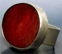 |
Questo anello magico che utilizza necessariamente gemme o pietre preziose di colore rosso è incantato con una magia della scuola Alteration in modo tale da far mantenere costantemente calda la temperatura corporea di chi lo indossa. In particolare, l'anello magico of Warm Keeping protegge costantemente la creatura che lo indossa dall'abbassamento, anche repentino, della temperatura. L'anello funziona automaticamente e costantemente senza alcuna necessaria attivazione. Fintanto che indossa l'anello, la creatura protetta non subirà gli effetti negativi delle basse temperature anche qualora sia esposta alle stesse senza indossare vestiario adeguato. L'anello, infatti, riuscirà a mantenere caldo il corpo della creatura fino a che la temperatura esterna non scenda oltre i -30° centigradi. Se la temperatura esterna scende sotto tale soglia la magia dell'anello non riuscirà a riscaldare il corpo della creatura con tutte le conseguenza che ciò può comportare (l'effetto magico si considererà immediatamente sospeso fino a che la temperatura esterna non salga sopra tale soglia). L'anello magico, inoltre, fornisce costantemente una leggera protezione contro tutti i danni immediati da freddo, siano essi di natura magica che naturale, riducendo gli stessi del 20% (riduzione calcolata per difetto). Infine, la creatura che indossa questo anello magico riceve un bonus di +1 a tutti i tiri salvezza richiesti per difendersi da effetti di freddo, siano essi di natura magica che naturale (si noti che questa protezione si applica solo per la protezione contro il freddo inteso come temperatura estremamente rigida, non estendendosi ad effetti diversi creati tramite la manipolazione del freddo o del ghiaccio. Il bonus previsto dall'anello, ad esempio, non si applica ad un tiro salvezza necessario per evitare schegge di ghiaccio taglienti). |
| OGGETTO | Ring of Waterproof |
| ORIGINE | MAGICA |
| POTENZA | Greater Minor Enchantment (375 xp, 4.500 gp) |
| SCUOLA DI MAGIA | ALTERATION |
|
DESCRIZIONE
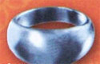 |
Questo anello magico è spesso costituito da una spessa fede di colore bluastro
(valore minimo 25 g.p.). L'incantamento presente su questo anello rende
il fisico e tutto l'equipaggiamento trasportato dalla creatura che lo
indossa perfettamente idrorepellente. Per tale motivo gli oggetti
trasportati dalla creatura (fino al suo massimo peso trasportato)
resteranno perfettamente asciutti (senza danneggiarsi) anche se
totalmente immersi nell'acqua. Tale effetto, ovviamente, non sarà
applicato qualora la creatura smetta di trasportare l'oggetto (in tale
ultimo caso l'oggetto lasciato perderà immediatamente la protezione
dall'acqua). Si noti che questo incantamento non difende in alcun modo
gli oggetti ed il corpo della creatura dal contatto con liquidi di
natura diversa dall'acqua (si pensi ad acidi, oli, ecc...). Inoltre, la
creatura protetta e tutti gli oggetti dalla stessa indossati otterranno
un bonus di +5% a tutti i tiri salvezza contro incantesimi od effetti
che si basano sull'acqua. |

| OGGETTO | Ring of Courage |
| ORIGINE | MAGICA (20 CARICHE) |
| POTENZA | Lesser Enchantment (500 xp, 5.000 gp) |
| SCUOLA DI MAGIA | CHARM |
|
DESCRIZIONE
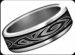 |
Questo anello magico si presenta forgiato come una fede d'argento che presenta incisioni e fregi vari (per un valore minimo pari a 50 monete d'oro). Questo anello incita la sua mente di chi lo indossa a reagire contro ogni forma di paura sia magica che normale. Per tale motivo, ogni volta che chi indossa questo anello, essendo stato costretto ad effettuare un tiro salvezza su coraggio contro un qualsiasi effetto dovuto alla paura, lo abbia fallito, costui potrà ripetere nuovamente tale tiro. A tale secondo tiro salvezza sarà applicata, però, una penalità di -5%. Si noti che, in applicazione del criterio generale, in nessun caso la vittima potrà ripetere un tiro salvezza per evitare il medesimo effetto più di una volta (se, per esempio, ha usato il potere dell'anello per ripetere il tiro e lo ha fallito non potrà usare un punto divino per ripetere tale ultimo tiro salvezza). |


| OGGETTO | Ring of Spell Echoing |
| ORIGINE | MAGICA (20 CARICHE) |
| POTENZA | Lesser Enchantment (500 xp, 5.000 gp) |
| SCUOLA DI MAGIA | ENCHANTMENT |
|
DESCRIZIONE
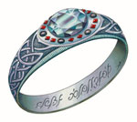 |
Questo anello può
essere utilizzato unicamente da coloro sono in grado di lanciare
incantesimi dei maghi.
L'anello magico, in particolare, è in grado di assorbire il potere
magico rilasciato dai maghi al lancio degli incantesimi per poi
liberarlo nuovamente. Il round immediatamente successivo a quello nel
quale ha lanciato un incantesimo di primo, secondo o terzo livello di
potere il mago che indossa l'anello può attivarlo (l'anello non può
essere attivato se il mago, durante il round precedente, ha lanciato una
magia proprio attraverso l'utilizzo dell'anello). Provare ad attivare
l'anello richiede l'utilizzo di una carica magica. In caso di
successo, l'anello fornirà al mago le energie magiche necessarie a
lanciare nuovamente la medesima magia lanciata il round precedente su un
qualsiasi bersaglio scelto dal mago stesso. Provare ad attivare
l'anello si considera azione analoga al lancio dell'incantesimo.
Occorrono componenti vocali (nei quali è inserita la parola di
attivazione dell'anello) e somatici, è necessario il mantenimento della
concentrazione e si utilizza il casting time base
dell'incantesimo. Attraverso questo anello
non
possono essere lanciati incantesimi aventi casting time superiore
ad 1 round.
Si noti, che non ha nessuna rilevanza il metodo di lancio scelto
precedentemente dal mago (ad es. casting time ritardato)
dovendosi considerare per il lancio unicamente l'incantesimo base. E'
necessario, inoltre, che il mago abbia a disposizione ed eventualmente
consumi il componente materiale necessario al lancio della magia. Il
mago ha una percentuale di attivare con successo l'anello così
determinata: |

| OGGETTO | Ring of Magic Motes |
| ORIGINE | MAGICA (20 CARICHE) |
| POTENZA | Lesser Enchantment (500 xp, 5.000 gp) |
| SCUOLA DI MAGIA | EVOCATION |
|
DESCRIZIONE
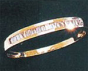 |
Questo anello magico si presenta forgiato come una fede d'argento o d'oro con incastonati diverse gemme trasparenti solitamente del tipo quarzo di roccia (per un valore minimo pari a 100 monete d'oro). Quando questo anello magico viene attivato, consumando una relativa carica, tre sfere di luce azzurra appaiono intorno a chi lo indossa ed iniziano a girare intorno a costui. Le sfere illuminano di luce bluastra fino a 6 metri di distanza da chi indossa l'anello. Quando costui è attaccato, una sola sfera si dirigerà verso ogni singolo attacco fisico assorbendo fino a 1-4+1 danni provocati dallo stesso per poi svanire immediatamente. Chi indossa l'anello, dunque, si ferirà eventualmente per i danni ulteriori provocati dall'attacco. L'intervento della sfera non impedirà comunque che l'attacco colpisca la creatura protetta che potrà, quindi, subire gli eventuali effetti secondari dello stesso anche qualora la sfera abbia assorbito interamente il danno (si pensi ad es. al veleno od al risucchio di energia). Qualora, invece, chi indossa l'anello subisca danni per un effetto ad area tutte le sfere si attiveranno, in ogni caso, per assorbire il danno provocato svanendo immediatamente dopo l'intervento. Si noti che, utilizzando il medesimo criterio utilizzato dagli anelli magici di protezione, i danni che non si sostanziano in aggressioni fisiche esterne non possono essere assorbiti dalle sfere (si pensi ad es. ad incantesimi od a poteri che attaccano il fisico della vittima dall'interno come la magia Blood Burn o che producono danno ad area direttamente nel corpo della vittima come Death Star). Se non sono utilizzate, le sfere svaniranno comunque dopo che sia trascorsa un'ora dall'attivazione del potere magico. Parimenti le sfere svaniranno se colui che indossa l'anello lo rimuova per qualsiasi motivo. Infine, deve osservarsi che quest'anello non può essere attivato nuovamente fino a che sia presente ancora almeno una sfera creata dalla precedente attivazione intorno alla creatura protetta. |


| OGGETTO | Ring of Negative Field |
| ORIGINE | MAGICA (20 CARICHE) |
| POTENZA | Superior Enchantment (1000 xp, 10.000 gp) |
| SCUOLA DI MAGIA | NECROMANCY |
|
DESCRIZIONE
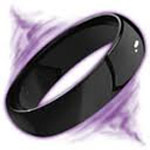 |
Questo anello magico a cariche si presenta come un anello interamente ricavato da onice dal valore di almeno 100 monete d'oro. L'anello possiede un incantamento della scuola Necromancy che permette a chi lo indossa di essere circondato da una pericolosa aura di energia negativa. Tale effetto si ottiene attivando l'anello e consumando una delle sue cariche magiche. L’aura si nota dall’esterno come una serie di sottili strati di nubi nere dai riflessi viola che girano vorticosamente intorno a chi indossa l'anello. Tutte le creature intelligenti la cui esistenza si basa sull’energia positiva si rendono conto che entrare a contatto con quell’aura può essere pericoloso. La prima volta che una qualsiasi creatura attacca in corpo a corpo chi è circondato da tale aura, costuei subirà 3d6+2 danni da esposizione ad energia negativa e l'aura svanirà scaricandosi nel corpo della vittima. Si noti che chi è circondato dall'aura non può in alcun modo volontariamente avvicinarsi in modo tale ad una creatura per scaricargli contro la stessa. Questo incantamento non ha effetto sulle creature la cui essenza non si basa sull'energia positiva (si pensi ai non morti ed ai costruiti) sui quali, però, può comunque scaricarsi l'aura negativa. Se non viene scaricata, l'aura negativa svanirà comunque dopo che sia trascorsa un'ora dall'attivazione del potere magico. Parimenti la stessa svanirà se colui che indossa l'anello la rimuova per qualsiasi motivo. Si tenga presente, infine, che una volta attivato l'anello lo stesso non potrà essere attivato nuovamente fino a che non sia trascorsa un'ora dalla precedente attivazione. |
| OGGETTO | Ring of Phantasmal Form |
| ORIGINE | MAGICA (20 CARICHE) |
| POTENZA | Greater Enchantment (1500 xp, 15.000 gp) |
| SCUOLA DI MAGIA | NECROMANCY |
|
DESCRIZIONE
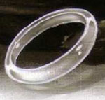 |
Questo anello magico a cariche si presenta come un anello di cristallo trasparente dal valore di 250 monete d'oro. L'anello possiede un incantamento della scuola Necromancy che permette a chi lo indossa di divenire temporaneamente incorporeo assumendo la cd. "forma fantasma". In particolare, utilizzando una carica dell'anello, chi lo indossa può decidere di assumere questa forma dopo il compimento di una qualsiasi azione effettuata nel round oppure dopo il tiro dell'iniziativa (non può essere assunta la forma fantasma in altri momento del round). Si consideri una non azione che si realizza ad un fattore iniziativa di un punto superiore rispetto a quello nel quale la creatura decide di assumere tale forma. In forma fantasma la creatura otterrà i seguenti benefici: immunità alle armi normali pari a 10 danni a colpo, 15% di resistenza magica, 3 punti di classe armatura per la forma eterea (si consideri come bersaglio mancato), immunità all'energia negativa, immunità ai colpi critici, immunità al risucchio di energia vitale. In forma fantasma, però, la creatura non potrà muoversi o compiere alcuna diversa azione (ivi comprese le non azioni come ad esempio lasciare cadere un oggetto). La creatura assumerà automaticamente la forma corporea a partire dall'inizio del successivo round di combattimento. |


| OGGETTO | Ring of Arrow Deflection |
| ORIGINE | DIVINA - Arlinir - Fratellanza della Luce (20 CARICHE) |
| POTENZA | Lesser Enchantment (600 xp, 6.000 gp) |
| SCUOLA DI MAGIA | ABJURATION |
|
DESCRIZIONE
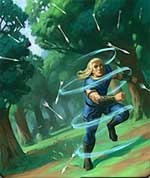 |
Questo anello magico è creato dai chierici di Arlinir. Questo anello può essere attivato da chi lo indossa utilizzando la parola magica di attivazione e spendendo una carica magica. Si tratta di una free action con componente vocale che non richiede il mantenimento della concentrazione. L'attivazione deve essere dichiarata nella fase delle intenzioni e deve avvenire come prima azione del round. L'attivazione impone un modificatore alle iniziative per le eventuali azioni successive del round pari a +2. Una volta attivato l'anello creerà raffiche di vento vorticose intorno al corpo di chi lo indossa. Le raffiche sono in grado di difendere il portatore dell'anello dai proiettili scagliati a distanza contro lo stesso. In particolare, tutti coloro che attaccheranno chi indossa l'anello durante la sua attivazione utilizzando armi da fuoco e da tiro riceveranno una penalità di -5 al tiro per colpire. Proiettili di grosse dimensioni (colpi di catapulta, balista, massi lanciati dai giganti) e proiettili lanciati utilizzando propulsione magica (come quelli effetto dell'uso di incantesimi) non saranno deviati dalle raffiche avendo comune effetto sul corpo della creatura. L'effetto magico avrà una durata pari a 2d6 round ma potrà essere dissolto anticipatamente da una magia di dispel magic lanciata con successo. Se, per qualsiasi motivo, chi indossa l'anello lo rimuove prima dello scadere della durata del potere magico, l'effetto svanirà immediatamente e definitivamente. |


| OGGETTO | Ring of Lesser Endurance |
| ORIGINE | DIVINA - Divinità Srodan - Divinità Neutrali |
| POTENZA | Minor Enchantment (150 xp, 1.000 gp) |
| SCUOLA DI MAGIA | ALTERATION |
|
DESCRIZIONE
|
I chierici di Srodan, divinità nanica della giustizia e del vigore, possono creare anelli magici con incantamenti minori in grado di restituire ai combattenti prestanza fisica persa nel corso della battaglia. Si tratta di pesanti anelli di metallo con sopra incise rune naniche che, una volta al giorno (si consideri il momento di flusso di energia divina di Srodan alle ore 7.30), possono essere attivati da chi li indossa (si tratta di un'attivazione che richiedendo solo il componente verbale consistente nella parola magica di attivazione non impedisce lo svolgimento di altre azioni nel medesimo round ma impone una penalità di +2 all'iniziativa, fattore di iniziativa al quale si verificano del resto gli effetti dell'incantamento) al fine di permettere il recupero di 5 punti fatica persi nel corso della giornata. |
| OGGETTO | Dwarven Ring of Granite |
| ORIGINE | DIVINA - Srodan - Divinità Neutrali (20 CARICHE) |
| POTENZA | Superior Enchantment (1250 xp, 12.500 gp) |
| SCUOLA DI MAGIA | ALTERATION |
|
DESCRIZIONE
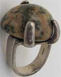 |
Questo potente anello magico è interamente costruito in solido granito. Creato dai più potenti chierici di Srodan, in quest'anello è imprigionato il segreto della resistenza della roccia. Questo anello può essere attivato da chi lo indossa utilizzando la parola magica di attivazione e spendendo una carica magica. Si tratta di una free action con componente vocale che non richiede il mantenimento della concentrazione. L'attivazione deve essere dichiarata nella fase delle intenzioni e deve avvenire come prima azione del round. L'attivazione impone un modificatore alle iniziative per le eventuali azioni successive del round pari a +4. Il corpo di chi indossa l'anello e lo ha attivato, quindi, assumerà le sembianze della nuda roccia a partire dal momento del round in cui l'anello è stato attivato pari al tiro dell'iniziativa modificato da un modificatore pari a +1. Nonostante il corpo apparirà della consistenza della roccia, però, lo stesso manterrà l'originaria flessibilità e capacità di movimento. La creatura che indossa l'anello acquisterà, dunque, una resistenza ai danni comuni tale da ridurre i primi 5 danni subiti da ogni singolo colpo inferto. I danni provocati dalla magia o dalle armi magiche che siano almeno +1 nonché dagli attacchi fisici ad esse equivalenti non saranno in alcun modo ridotti. L'effetto magico avrà una durata pari a 10 round ma potrà essere dissolto anticipatamente da una magia di dispel magic lanciata con successo. Se, per qualsiasi motivo, chi indossa l'anello lo rimuove prima dello scadere della durata del potere magico, l'effetto svanirà immediatamente e definitivamente. |


| OGGETTO | Ring of Shadow Veil |
| ORIGINE | DIVINA - Kalian - Forze Oscure |
| POTENZA | Greater Minor Enchantment (375 xp, 3.750 gp) |
| SCUOLA DI MAGIA | ABJURATION |
|
DESCRIZIONE
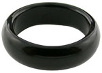 |
Questo anello magico, interamente realizzato in onice e dal costo di almeno 100 monete d'oro, è incantato dai chierici di Kalian. Questo anello può essere attivato da chi lo indossa una volta per ogni momento di flusso di energia divina di Kalian. Gli appartenenti alla razza degli Elfi Alti non possono attivare questo incantamento. Si tratta di una free action con componente vocale (invocazione a Kalian) che non richiede il mantenimento della concentrazione e che impone un modificatore alle iniziative per le eventuali azioni successive del round pari a +2. A partire da quando l'incantamento è attivato e per tutto il resto del round il corpo di chi indossa l'anello viene circondato da un velo di oscurità che ne nasconde parzialmente la vista. Per tale motivo, chiunque provi a colpire il beneficiario riceverà una penalità di -2 al tiro per colpire e del 20% di fallire nel lancio di incantesimi aventi costui come bersaglio diretto (-3 e 30% se chi indossa l'anello appartiene alla razza degli Elfi Scuri). Trattandosi di un alone di buio, creature accecate o che hanno una vista in grado di penetrarlo (si pensi alla vista abissale o all'oscurovisione) non saranno influenzate dalla presenza velo d'ombra (o lo saranno in maniera ridotta); parimenti non saranno influenzate che percepiscono la presenza del nemico con sensi diversi dalla vista (si pensi al senso del tremore od al senso primordiale). Il velo tenebroso non limita in alcun modo la vista di chi indossa l'anello magico. |


| OGGETTO | Ring of the Serpent Sect |
| ORIGINE | DIVINA - Serpente - Forze Oscure |
| POTENZA | Lesser Minor Enchantment (100 xp, 750 gp) |
| SCUOLA DI MAGIA | CHARM |
|
DESCRIZIONE
|
Con
l'incantamento minore
of Serpent Sect
può essere incantato unicamente un
anello
d'argento avente la forma di un serpente dal valore di minimo 25 monete
d'oro e dal peso pari ad 1/10 di libbra. Questo oggetto magico
rappresenta l'aspetto settario del Culto del Serpente. Indossare questo
simbolo serve, infatti, a mostrare l'appartenenza alla setta religiosa
(l'anello quindi può essere indossato validamente solo dai fedeli del
Serpente). Per tale motivo chi indossa questo oggetto magico riceve un
bonus di +1 a tutte le prove nella competenza
Good Willing Faith
[Generale] eventualmente posseduta. Costui ottiene anche un bonus di +1
alle prove nelle seguenti competenze esclusivamente quando le utilizza
nei confronti di chi è fedele del Serpente:
Teaching
[Generale],
Astrology
[Sacerdoti - Utenti di Magia],
Diagnostic
[Sacerdoti - Utenti di Magia],
Healing
[Sacerdoti],
Battle Mastery
[Combattenti],
Fortune Telling
[Vagabondi],
Ritual Tattoos
[Vagabondi],
Hypnotism
[Utenti di Magia] ed
Omen Reading
[Sacerdoti - Utenti di Magia]. |